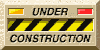

Welcome to My Page 
Thanks for visiting my corner of the internet.
Before you ask, the site looks the way it is to rekindle nostalgia for a more civilized period
of
the
internet.
* Mind you, the site is still a work-in-progress. Broken links will soon be fixed.
My Story
I'm a 2000s kid, so sure — this site is a bit of a throwback to the late-2000s internet era.
I build tools around tools — parsers, command-line utilities, batch editors, Chrome extensions, and whatever else makes workflows smoother. My day job? I’m a solution engineer working on IT operations powered by AI, using Ignio .
When I’m not coding, you’ll probably find me humming a tune, messing around with MIDI on a keyboard, between pages of a book — or staring thoughtfully at the default cube in Blender.
Latest Updates
- June 2025 - Site revived with classic HTML style!
- April 2003 - Added new photo gallery section
- Jan 2001 - Launched the site 🎉